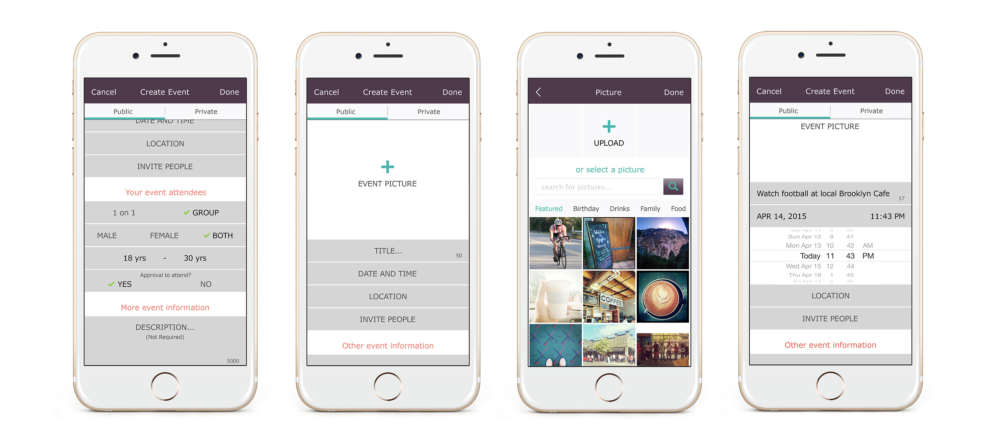

Trice is an app that connects people to meet up and do cool activities together. Users send invites to multiple friends who accept or decline with one tap. The senior designer and I collaborated on this project.
